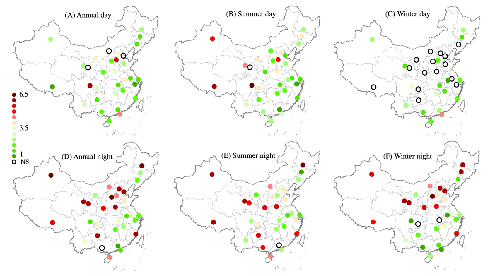

9 SAR and Temperature
9.1 Summary
This week’s lecture introduced Synthetic Aperture Radar (SAR) technology. SAR is an active remote sensing technology that works by emitting microwave signals and measuring their backscatter. SAR’s unique advantage lies in its all-weather, day-and-night imaging capability, able to penetrate clouds and light precipitation, making it a valuable tool for urban environment monitoring. Interpreting SAR images requires understanding backscatter coefficients, incidence angles, surface roughness, and dielectric properties, which collectively influence the reflection characteristics of radar signals. In urban applications, SAR technology can be used to monitor infrastructure, detect ground deformation, and assess disaster impacts. SAR data processing typically involves radiometric correction, geometric correction, and terrain correction steps to improve data quality and accuracy.
In the practical session, we used two different data products—Landsat and MODIS—to explore temperature distribution in urban areas. Interestingly, the practical session this week diverged from SAR and explored temperature analysis using remote sensing data. This reminded me of Week 5’s lecture on temperature -urban heat islands (UHIs).
Urban Heat Island (UHI) refers to the phenomenon where urban areas are warmer than surrounding rural areas, primarily caused by heat absorption of urban building materials, reduced vegetation cover, and heat generated by human activities. Thermal infrared remote sensing is a key technology for studying UHI, obtaining surface temperature distribution by measuring thermal radiation in the 8-14μm wavelength range. This technology is crucial for assessing the cooling benefits of green infrastructure, identifying heat risk areas within cities, and supporting climate-adaptive planning. Research on the urban heat island effect has significant implications for sustainable urban development and resident health, helping urban planners design more livable urban environments.
9.2 Applications
Temperature monitoring has been widely applied in urban studies to assess the impact of urban heat islands (UHIs) on human health and the environment. For instance, Landsat thermal data has been used to map UHI intensity in cities worldwide, revealing significant temperature differences between urban and rural areas. This week’s practical exercise demonstrated how to process and visualize temperature data, providing insights into spatial temperature variations. A study by Zhou et al. (2015) highlights the importance of considering the spatial footprint of UHIs when designing urban policies, emphasizing the need for localized strategies to address heat-related challenges. This study investigates the Urban Heat Island (UHI) effect across 32 major Chinese cities using MODIS Land Surface Temperature (LST) data from 2003 to 2012. The UHI effect, characterized by elevated temperatures in urban areas compared to their rural surroundings, was found to decay exponentially with distance from urban centers.

SAR technology, with its all-weather and all-time observation capabilities, demonstrates unique advantages in urban monitoring. Ferretti et al. (2001) pioneered the Permanent Scatterer Interferometric SAR (PS-InSAR) technique for urban infrastructure monitoring, achieving millimeter-level precision in measuring surface deformation. This methodology has been widely applied to detect and monitor ground subsidence, structural instability, and infrastructure deterioration in urban environments. The research demonstrated SAR’s capability to provide continuous monitoring of critical urban structures, enabling early warning systems for potential hazards and supporting evidence-based urban management decisions. The non-invasive nature of SAR monitoring makes it particularly valuable for heritage conservation in historic urban centers while simultaneously supporting modern smart city initiatives through its ability to generate comprehensive deformation maps of entire metropolitan areas.
9.3 Reflection
Reflecting on this week’s content, I was reminded of my previous study in Week 4 on Phoenix, Arizona, a city facing severe challenges from extreme heat. The practical session on temperature monitoring highlighted the importance of using remote sensing tools, such as thermal data, to analyze and address urban heat islands (UHIs). In the case of Phoenix, integrating Earth Observation (EO) data into urban planning policies could provide actionable insights to mitigate heat-related risks. However, the implementation of such tools faces challenges, including data accessibility, the need for technical expertise, and the integration of EO outputs into decision-making processes.
Similarly, SAR technology offers immense potential in monitoring environmental changes, but its application in policy requires overcoming barriers like cost and data processing complexity. Personally, I found the complementary nature of SAR and temperature monitoring particularly interesting, as they provide a holistic perspective on environmental dynamics. In the future, I see the integration of these tools becoming increasingly relevant, especially in addressing climate resilience in urban areas. While the tools presented this week may not directly apply to all contexts, their principles and methodologies can inspire innovative approaches to tackling complex environmental challenges.
9.4 References
Zhou, D. et al. (2015) The footprint of urban heat island effect in China. Scientific reports. [Online] 5 (1), 11160–11160.
Ferretti, A. et al. (2001) Permanent scatterers in SAR interferometry. IEEE transactions on geoscience and remote sensing. [Online] 39 (1), 8–20.